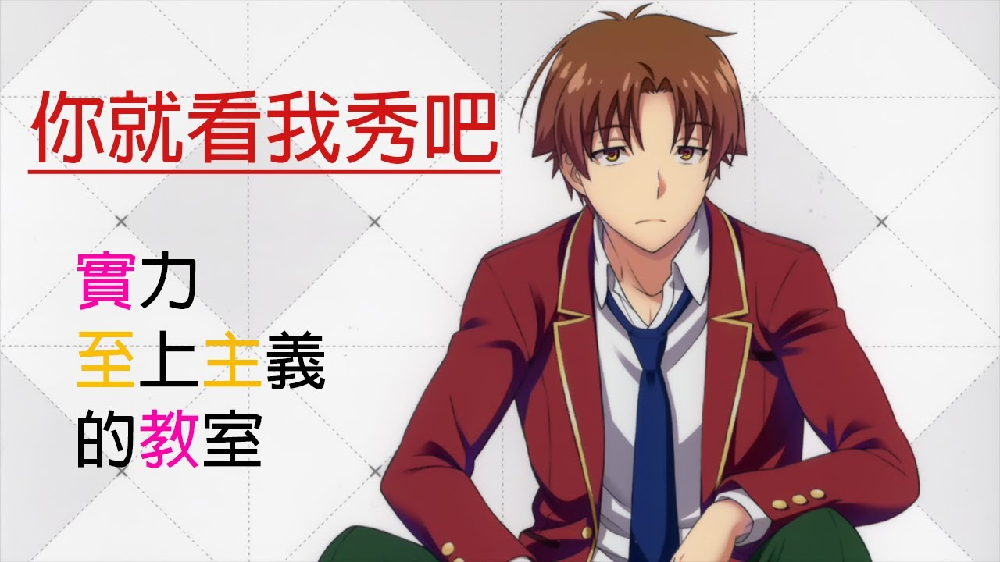
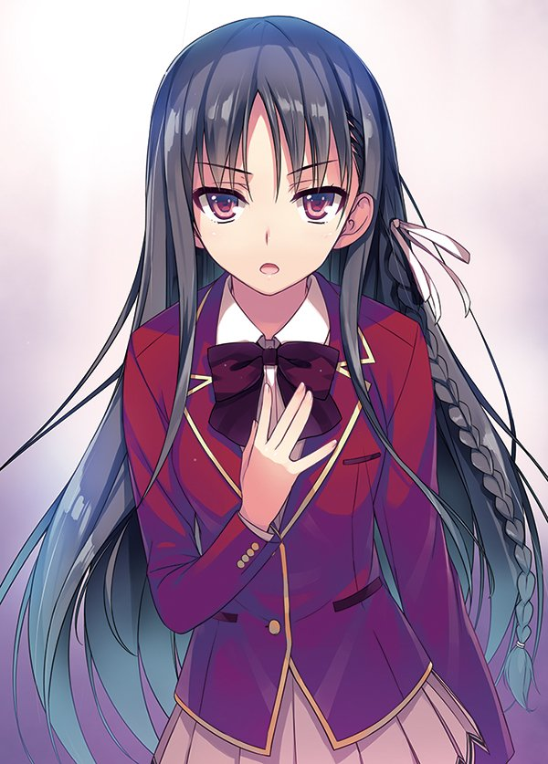
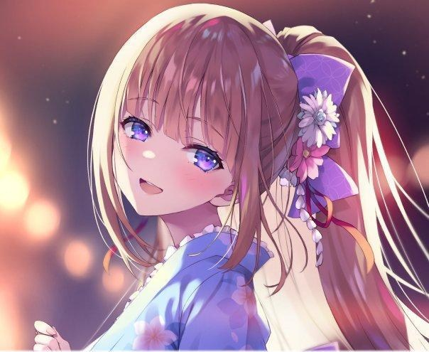
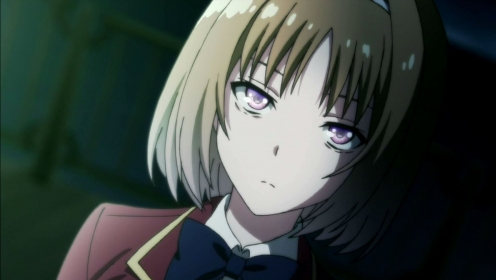
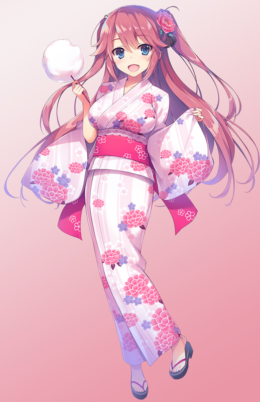
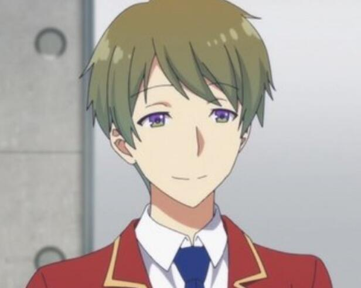

綾小路清隆

D班的幕後領導人物。開始時凡事欠缺積極性，並對自己的未來毫無展望，自稱是避事主義者。入學後對於結交朋友有著一定渴求，但一直沒和眾人深交。
在原作小說裡面內心活動豐富，但從櫛田的話語[和堀北與一之瀨的對話中[可知，實際上綾小路清隆從故事一開始就幾乎沒有任何的表情，也幾乎沒有任何的情緒波動，甚至被評為宛如人偶一般。
動畫則是採用第三人稱視角，直接省略了綾小路清隆絕大部分的內心活動。
漫畫綾小路清隆的表情和情緒波動則是跟正常人相差無幾。
雖然帥氣程度在全年級男生中排第五，但不善與人交流，在陰沉排行榜也是名列前茅。一直試圖交更多的朋友，D班真正的王牌與幕後推手，以堀北鈴音作為掩護隱藏自身實力，雖然經常暗中幫助鈴音，但也會為了自己的目的讓她吃苦頭。
在校內時刻意隱藏各方面的實力，故意將自己的分數控制在中間偏低的程度來減少引人注目。真實實力深不可測，且擅於智謀。入學考試時將自己的分數都以50分通過考試，因此班導茶柱和堀北學發覺綾小路清隆是有意隱藏自己，卻不知背後原因。
堀北鈴音

本作主要女角之一，D班的領導人物，冰山美少女。因為長期置身事外，所以有一定的看人的眼光。只論學習能力及自我管理能力方面擁有加入A班的水準，但在待人接物以及團隊合作方面有著諸多欠缺，因此被分發到D班。
和班上同學幾乎無交流，習慣獨自一人面對事情，卻意外地會和綾小路進行一定程度的互動，因此被班上部分同學認為兩人關係匪淺。
是學生會長堀北學的妹妹。為了得到身為學生會長的哥哥的認同而強烈希望能晉升到A班，為了達成這目標，認為有無綾小路的幫忙會是關鍵。認為綾小路是自己唯一能夠談心並且信任的朋友，但綾小路卻從不曾認為她是自己的朋友，也從不曾作為同學去擔心過她。
輕井澤惠

本作主要女角之一，D班女同學的主要領袖，深受女生信賴，朋友也很多。積極的辣妹系金髮藍瞳美少女，微微曬黑的皮膚，顯得十分可愛。個性好勝且強勢，受到同學、特別是女生們的信賴。所有層面的成績皆為平均之下的水準，卻具有向心力一般的特質。從協助綾小路的事上展示出其敏捷的應變能力，而且雖然成績一般，但頭腦在日常處事時卻意外地聰明。
被綾小路標記為D班「女帝團體」的核心。開學後很快與班級內的男生領袖平田洋介以情侶的名義公開了交往的關係。受到女生們的信賴，常跟隨平田的發言做出表態，代表女生給予意見或姿態。
櫛田桔梗

什麼是實力？ 【可以毫不猶豫地幫助他人，這麽做才是擁有實力的體現吧？】
D班的中心人物之一，交友範圍極廣，待人良善，無論何時都表現得十分溫柔，是有著高人氣的美少女。希望能和所有人都建立良好關係的同時，私底下也有不被人所知的另一面，班上同學只有綾小路曾偶然目睹過，事後威脅其不能說出去。
實際上是個好勝心很強的人，尤其討厭自己在擅長的項目上輸給別人，同時很在乎他人的讚美與羨慕。雖然各方面的資質都在平均值之上，終歸贏不了個別領域突出的人，因此才轉而戴上和善的面具，積極成為最受歡迎的人，以獲得他人信賴來滿足自己的虛榮心。
佐倉愛里

在班上沉默寡言，戴著平光眼鏡，身材豐滿，性格內向的美少女，不擅長與他人共處。看似除了乖巧怕生外再無明確的性格，總是靜靜地垂著眼、駝著背像是蜷縮在角落裡。做事欠缺積極性，並對自己的未來毫無展望。
平常看起來樸素不顯眼，其實私底下是名偶像，名叫「雫（しずく）」，平時會帶著自己的數位相機自拍貼文。但不久也因性格和跟蹤狂的騷擾而辭職。在被綾小路清隆拯救後，跟蹤狂也跟著被逮捕，之後開始暗戀綾小路清隆。
於自拍時偶然窺見了同班同學須藤健與C班男生鬥毆的過程，成為事件中唯一的目擊證人且保留了作為在場證據的照片。儘管目睹綾小路清隆與櫛田桔梗等人辛苦地尋找證人，但因為對交流的恐懼、以及害怕作為偶像的事情暴露而始終沒有站出來的打算。後來出席為須藤的第一次辯護會議作證，被包括C班班主任坂上老師在內的對手惡言指斥為說謊者結果哭紅了眼睛，被綾小路雙手搭肩強勢安慰。
平田洋介

D班的中心人物，主要領導人之一。會率先去做一般人認為麻煩不想做的事情，並盡可能滿足他人，不認為這樣很辛苦，認為自己只是做必須去做的事。無論外表還是溝通能力都十分出色，在女生間很有人氣，在全年級男生中帥氣度排名第二。足球社的成員。
觀察力敏銳，很早便發現綾小路深藏不露，也曉得他便是堀北身後出謀劃策的人物，並認為綾小路是一個令人感到毛骨悚然的恐怖人物。
D班極少數綾小路無法掌控的人物。綾小路認為平田不會僅僅是好友自殺未遂這點理由就被分發至D班，在還沒弄清全貌前，不會徹底信任平田。